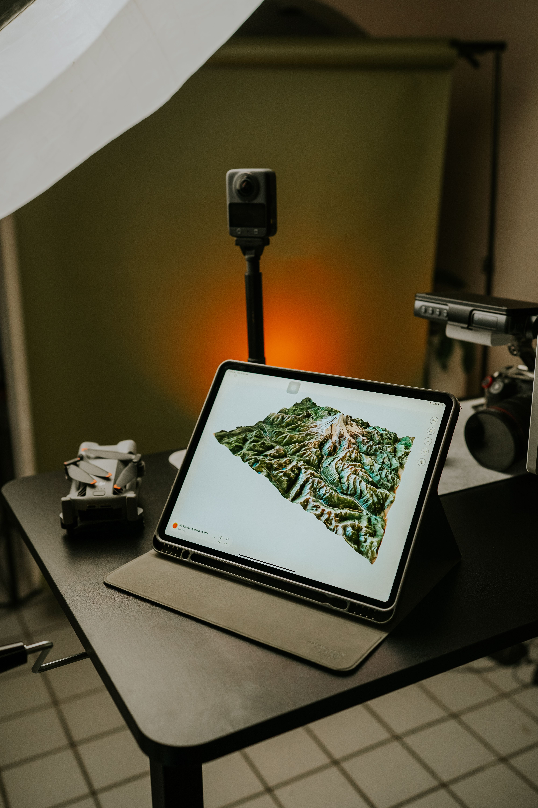

Data Analytics & Insights
Raw data to decisions. Actionable insights, not just pretty pictures. We transform complex geospatial data into executive-ready intelligence.

Raw data to decisions. Actionable insights, not just pretty pictures. We transform complex geospatial data into executive-ready intelligence.
Data without interpretation is just noise
A million data points mean nothing without interpretation. You don't need more data — you need clarity. You need to know what the data means, what actions to take, and what risks to mitigate.
Velodrones transforms raw geospatial captures into executive-ready dashboards, predictive maintenance reports, and compliance documentation. We combine advanced analytics, machine learning, and domain expertise to turn your aerial investment into boardroom-ready intelligence that drives real business outcomes.
AI-powered defect detection
Handle massive datasets
Forecast trends & failures
Real-time data visualization
AI-powered analysis identifies patterns and anomalies that predict equipment failures before they occur, enabling proactive maintenance scheduling.
Real-time KPI tracking and visualization dashboards that give executives instant visibility into asset health and operational efficiency.
Automated generation of regulatory compliance reports with audit trails, timestamped evidence, and standardized documentation.
Quantify ROI from drone inspections with detailed cost-benefit models showing avoided downtime, extended asset life, and risk reduction.
Multi-temporal analysis tracking changes over time — degradation rates, vegetation growth, erosion patterns, and construction progress.
Seamless integration with ArcGIS, QGIS, and other GIS platforms for spatial analysis, overlay operations, and geodatabase management.

Data is only valuable if it drives decisions. Our analytics services transform your raw drone captures into actionable intelligence — enabling predictive maintenance, optimizing capital allocation, demonstrating regulatory compliance, and proving ROI to stakeholders.
Don't just collect data — leverage it. Our analytics turn your aerial intelligence into competitive advantage, helping you make faster, smarter, data-driven decisions that improve safety, reduce costs, and extend asset life.
Stop drowning in data. Start making decisions with confidence. Let us transform your raw captures into actionable intelligence.
Request Analytics Demo View Analytics Projects